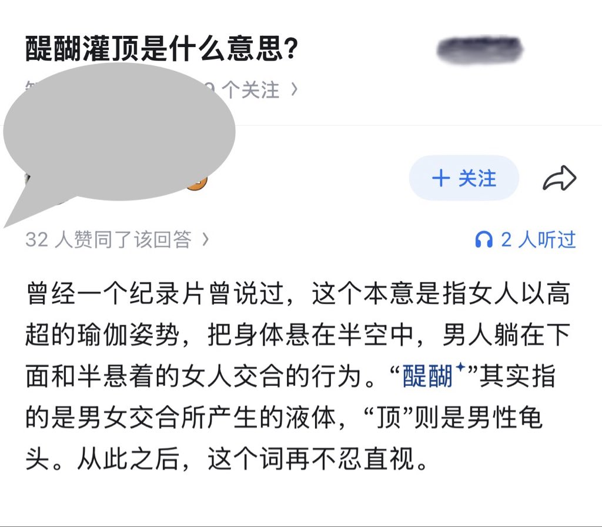

Luka Megurine 03（互fo
@LMegurine03
一般来说不会这么离谱的，就是在佛教的概念当中，牛乳提炼有五个等级，从低到高分别是牛乳，酪，生酥，熟酥，醍醐，因此醍醐这个词也象征着知识和思想的深度，而灌顶字面意义就是指将液体浇在头上的宗教仪式，但是在实际形式不止如此，抽象的将智慧输入脑中的修行过程，也都包含在这个词里

费洛蒙双栖哥
@noclcn7m
类似凌波微步 https://t.co/bJOqoTgIAF